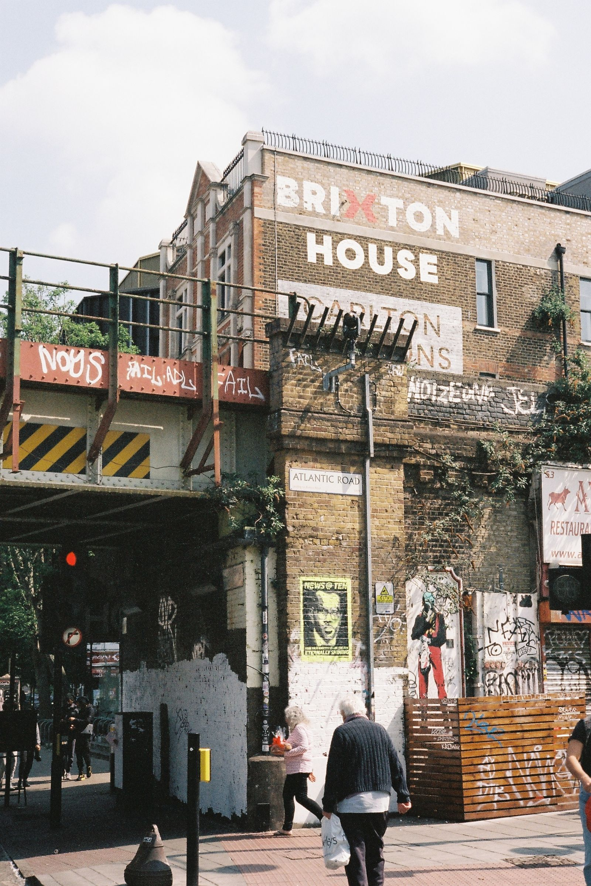

Shoreditch / Spitalfields
The densest creative-independent cluster in the east: the Liverpool Street to Brick Lane to Shoreditch High Street triangle, fully walkable and ringed by the creative workforce creators come from.
Creator marketing, but local. Magpie is forming London's founding roster district by district: local businesses book local creators ranked by how much of their audience actually lives nearby, and the first district to fill its roster launches first.

Magpie is free for creators. Always. Businesses pay the platform. You never pay to join, to list, or to get booked.
Local businesses in your district comp local creators a meal, a service or an experience, and creators post honestly, with the goal of posting within 48 hours of the visit. Paid bookings sit on top of comps: set your own rate from a £40 floor and keep 97% of it.
How it works: claim your spot in about a minute, get your decision, finish your profile, and take first pick of offers when your district opens. Headliners (15,000+ followers) are first in line for paid campaigns. Invite other creators with your personal link and earn Momentum points: +3 per sign-up, +10 per approval. Points order the creator list businesses see.
London is too big to launch all at once, so Magpie opens where the roster is densest. Creators and businesses join by district. The first district to reach 40 founding creators and 15 founding businesses launches first, and the winning district gets One Night: every founding creator out at a founding business on one Thursday evening.
The densest creative-independent cluster in the east: the Liverpool Street to Brick Lane to Shoreditch High Street triangle, fully walkable and ringed by the creative workforce creators come from.

The purest food-density play in London. Borough Market alone holds 100+ traders, ringed by Bermondsey Street and Bankside independents, and Southwark counts 149 independent food and drink shops, the most of any borough.

Compact and market-led: Brixton Village and Market Row, with 531 eligible businesses in the Brixton BID ballot area. The audiences here are residents, not tourists, so a local following counts for the most.

One Overground corridor: Ridley Road Market to Hackney Central to Church Street. Independents are 75% of businesses across Hackney town centres, the highest share evidenced in London, and the audiences are genuinely local.

Upper Street: a single walkable mile of independent restaurants, bars and boutiques, with an affluent resident catchment. Islington posted the second-fastest small-business growth in London in 2023–24.
Creators claim a founding spot under their district, free. Businesses apply for their district's founding list. Your place is held in sign-up order.
The first district to reach 40 founding creators and 15 founding businesses crosses the line and opens first. Every other district keeps building its roster.
On launch Thursday, 6 to 10pm, every founding creator in the winning district is out at a founding business. One district, one evening, and the goal of every post landing within 48 hours of the visit.
Next in line: Peckham leads the second wave, then Camden Town, Tooting, Greenwich and Clapham. Sign-ups from those areas count from today and decide the order they open.

One Night is the launch, not a party trick. Every founding creator in the winning district visits a founding business on the same Thursday evening, 6 to 10pm, on the standard deal: an honest post, #ad up front, with the goal of posting within 48 hours of the visit. The district gets a same-evening footfall spike, and London gets a feed full of one neighbourhood at once. Then the next district's race is already running.
Figures: ONS UK Business counts 2025 for the London total; district and creator-pool figures are Magpie estimates built from published borough counts (Local Data Company / GLA, Brixton BID, Kolsquare), labelled as estimates wherever they appear.
One roster per district, three bands. Magpie starts at 500 total followers across your platforms. Tiers are set automatically by your total audience across platforms, and they rise as you grow. What ranks you in front of a business is your local audience share: how much of that audience lives near them.
Magpie starts at 500 total followers across your platforms. Stacked across Instagram, TikTok and the rest: if your followers added together clear 500, you clear the bar. What gets you booked past it is an audience that actually lives in your district and actually engages.
When your district opens, you post offers and founding creators in your district claim them, visit like real customers and post with the goal of landing within 48 hours of the visit. Every post is tracked; if 7 days pass with no post, the visit does not count and is replaced, and no creator can ever be required to post positively.
Ads reach everyone except the people who live nearby. Magpie puts London micro-influencers who live in your district inside your business, posting to neighbours who can walk in this week.
Comp a meal, a service or an experience, book a creator at their listed rate, or put a coupon deal on the table. You set the offer and its ceiling.
Creators are ranked by local audience share before follower count, so the people who walk in are the people whose followers live near you.
One post or reel plus one story sharing it, honestly, #ad up front, with the goal of posting within 48 hours of the visit. No post inside 7 days and the visit is replaced, free.
You offer your own product at your cost and set the ceiling.Creators post 1 post or reel plus 1 story that shares it, with the goal of posting within 48 hours of the visit. Native share only: you can reshare the post with credit, and nothing more.
Book a creator at their own listed rate, from a £40 floor; the creator keeps 97%.One standard licence is included in every paid booking: 90 days of repost and paid ad use. Never perpetuity.
Put a deal on your offer instead: a coupon customers redeem with you in person.Redemptions are counted like every other visit, so you can see exactly what a post sent through your door.
Want to use a comped post in your own ads? That is a separate licence request at the creator's listed fee: 90 days, the creator approves each use, and the creator keeps 97% of the fee. Paid bookings and licensing are available on every plan. See full pricing and why local creators outperform reach.
Apply as a founding business How Magpie works for businesses
Founding rates for London businesses, held while your plan stays active. Your plan begins when your district launches; nothing is charged today.
All three plans are London founding rates, held while your plan stays active, with £75 off the first month and no per-location charge: one plan covers every location you run. Visits you don't use roll into the next month, then expire.
The founding business class is limited in every district. Founding businesses get first access when their district activates.
Every post labelled #ad. Up front. No exceptions.
In the UK, a comped meal counts as payment and a brief counts as control, so a post about a gifted visit is legally an advert under the ASA and CAP rules. Magpie is built for that: #ad sits at the front of every post, and a post does not count as delivered until the label is verified. #gifted on its own has been ruled inadequate, and the CMA can fine a business, a creator and anyone in between up to the higher of £300,000 or 10% of worldwide turnover for undisclosed ads. On Magpie, the disclosure is the system, not a hope.
Magpie is a local creator marketing platform. Local businesses offer local creators a comped meal, service or experience, or book them at the creator's own rate, and creators post honestly about the visit. Magpie ranks creators by how much of their audience actually lives near the business, tracks every post, and replaces any visit that does not deliver. London is a founding market, launching district by district: five districts are racing to open first.
On Magpie, a London business browses creators in its district and sees each creator's local audience share before choosing: the share of their followers who live near the business, ranked ahead of raw follower count. The business sends a comped offer, a paid booking or a coupon deal, the creator visits like a real customer, and the post is tracked in a dashboard. No DM chasing, no negotiating in comments, no paying for reach in another city.
Magpie's founding London pricing is published. Self-Service is £149 a month plus VAT for up to 5 creator visits a month, about £30 per visit. Growth is £269 a month plus VAT for up to 10 visits, about £27 per visit. Managed is £549 a month plus VAT for up to 20 visits with a coordinator running everything. Founding businesses get £75 off the first month, plans run on a 3-month minimum, and the founding rate is held while the plan stays active. The only other cost is the comp the business chooses to offer, provided at its cost, not retail.
Yes. Under the ASA and CAP rules that govern UK advertising, a free meal, service or experience counts as payment, so a post about a gifted visit is an advert and has to be labelled as one. Magpie builds this in: every post from a Magpie visit carries #ad up front, and a post does not count as delivered until the label is verified. #gifted on its own is not enough.
Five founding districts are racing: Shoreditch and Spitalfields, Borough and Bankside, Brixton, Dalston to Stoke Newington, and Angel and Islington. Creators and businesses join by district, and the first district to reach 40 founding creators and 15 founding businesses launches first. Peckham leads the next group, with Camden Town, Tooting, Greenwich and Clapham behind it.
London opens district by district instead of all at once, so the first roster is dense enough to matter. Creators and businesses sign up under their district, and the first district to reach 40 founding creators and 15 founding businesses opens first. The winning district gets One Night: every founding creator out at a founding business in that district on one Thursday evening, 6 to 10pm, with the goal of posts landing within 48 hours of the visit.
You make an offer: a comped meal, service or experience, a paid booking at the creator's listed rate, or a coupon deal customers redeem with you. A local creator claims it, visits like a real customer, and posts honestly, with the goal of posting within 48 hours of the visit: one post or reel plus one story sharing it. Every post is tracked, and if 7 days pass with no post, the visit does not count and is replaced.
Claim your spot free in the Magpie app, with London as your market and your district as your home patch. Magpie starts at 500 total followers across your platforms. Your tier is set by followers: Neighbors (500 to 2,000), Locals (2,000 to 15,000) or Headliners (15,000 and up). Founding creators in the winning district take part in One Night and see their district's offers first.
Joining is free, always. A comped visit pays in the meal, service or experience itself. On paid bookings you set your own rate, from a £40 floor, and keep 97% of it. If a business wants to license one of your comped posts for its own ads, that is a separate request at your fee: you approve each use and keep 97% of the licensing fee too.
Apply for the founding business list on the business page and pick your district. Your category spot in your district is held in application order, founding pricing (£149 a month Self-Service, £269 a month Growth or £549 a month Managed, all plus VAT) is held while you remain subscribed, and your plan begins when your district launches. Nothing is charged today.
Yes. Sign up in the app with your real home area. If your patch is not a founding district yet, your sign-up still counts: Peckham, Camden Town, Tooting, Greenwich and Clapham are next in line, and signup counts decide which districts open after the race. Any London creator can join once they reach 500 total followers across their platforms.
No. Neither Magpie nor any business on it can require a positive post or review, in London or anywhere else. Creators post their honest take, and that honesty is why local posts work. What Magpie guarantees is the deliverable: an honest post, labelled #ad, with the goal of posting inside 48 hours of the visit and every post due inside 7 days, or the visit is replaced.
New to local creator marketing? Start with the Magpie Learn guides, or read why local creators beat national reach.
Magpie is expanding rapidly, and anyone can sign up from any city, listed or not. Sign up now and finish your profile, and you are in your city's founding circle when it opens: first pick of its first businesses goes to completed founding profiles. Cities open where creators pile up first, and every completed profile moves its city closer.
Creators join free and hold founding status forever. The first district to 40 creators and 15 businesses opens first.